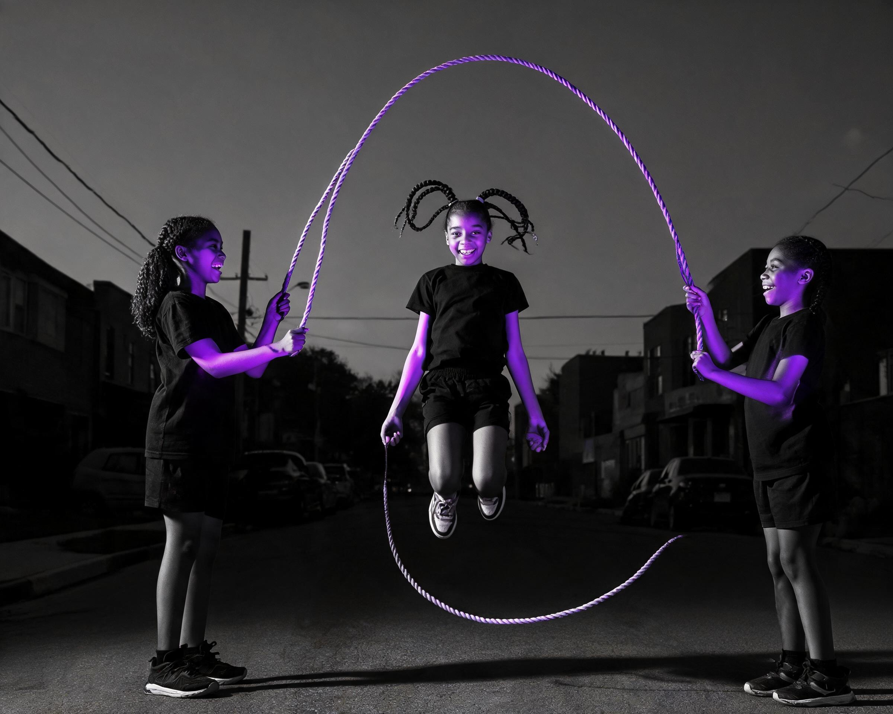

R31 Board — T-Pass Fixes + R31 Re-Gens
Top section (01–06): the six frames where you said love the photo, fix the treatment — same photos, re-graded in code, shown before and after. Bottom section (07–12): the six re-gen slots from your R30 notes. Click any image to open it full size.
T-Pass — same photo, treatment fixed
No re-generation here. The black-and-white field is pushed deeper and the colour event is pulled onto the exact brand colour, so the colour reads as ours. BEFORE is left, AFTER is right (stacked on phone). Your originals are untouched on disk.


Flag: some rose sits on the coat — that’s where the original light fell; only a re-gen could move it to skin.


Flag: grade at its ceiling — the source photo had almost no light on her, so this reads as a warm rim-light. Re-gen candidate with an invented light.
R31 — the six re-gens
New frames built from your R30 notes: three colours in one frame, people lit instead of fabric, more black-and-white around the colour.
Flag: violet and rose ride the shirts more than skin; the amber child’s spray reads as a sparkle burst.
Three colours, one per childFlag: the card fans glow on their own. An alternate take fixes the cards but loses grandma’s light — your call.
Relit — both faces brightest
Lit ropeAnswer by number: keep / fix / dead — one line each
For 01–06, you are judging the after: keep it, fix it (say what), or it’s dead and the frame goes. For 07–12 you are judging the new frame the same way.
- 01Rooftop Toast — T-pass, amber
- 02Piggyback — T-pass, rose
- 03Arrival Spin — T-pass, rose
- 04Fort Reveal — T-pass, amber
- 05Dawn Swimmer — T-pass, amber
- 06Harvest Crate — T-pass, amber
- 07Sprinkler Chase — R31, three colours
- 08Stoop Cards — R31, amber
- 09Double Dutch — R31, violet
- 10Beach Circle — R31, rose
- 11Barn Spin — R31, three colours
- 12Wall Painter — R31, violet